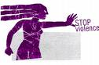

|
|
On the Web
Latest update – Tuesday 23 April 2013.
Articles in this section
- 25 February 2009
Correspondent Elahe Amani with Lys Anzia
- 14 February 2009

by: Nazila Fathi
- 11 February 2009
Amnesty International Report on Human Rights Violations in Last 3 Months
- 10 February 2009

- 5 February 2009

- 4 February 2009
By: Elham Gheytanchi
- 2 February 2009

- 1 February 2009
- 22 January 2009

- 12 January 2009
Omid Memarian interviews Iranian activist SUSSAN TAHMASEBI
- 10 January 2009
- 10 January 2009
- 31 December 2008

Over 80 Organizations and Activists Express Concern Regarding Safety of Shirin Ebadi
- 31 December 2008
- 30 December 2008

- 29 December 2008
- 23 December 2008
- 21 December 2008
Appeal to all Arab Governments for the Withdrawal of Reservations and the Ratification of the Optional Protocol to CEDAW
- 20 December 2008
Urgent Action
- 20 December 2008
by: Hamida Ghafour
- 17 December 2008

- 10 December 2008
Parvin Ardalan in Interview with Rooz
by: Asieh Amini
- 2 December 2008
- 1 December 2008

- 29 November 2008

UN HR Experts Voice Concern
- 28 November 2008
By: Elahe Amani
- 25 November 2008

Esha Momeni Still Banned from Leaving Iran
- 5 November 2008

Renewed Attempts to Isolate and Silence Women’s Rights Activists
- 1 November 2008

Amnesty International Letter to Head of Judiciary:
- 30 October 2008
|